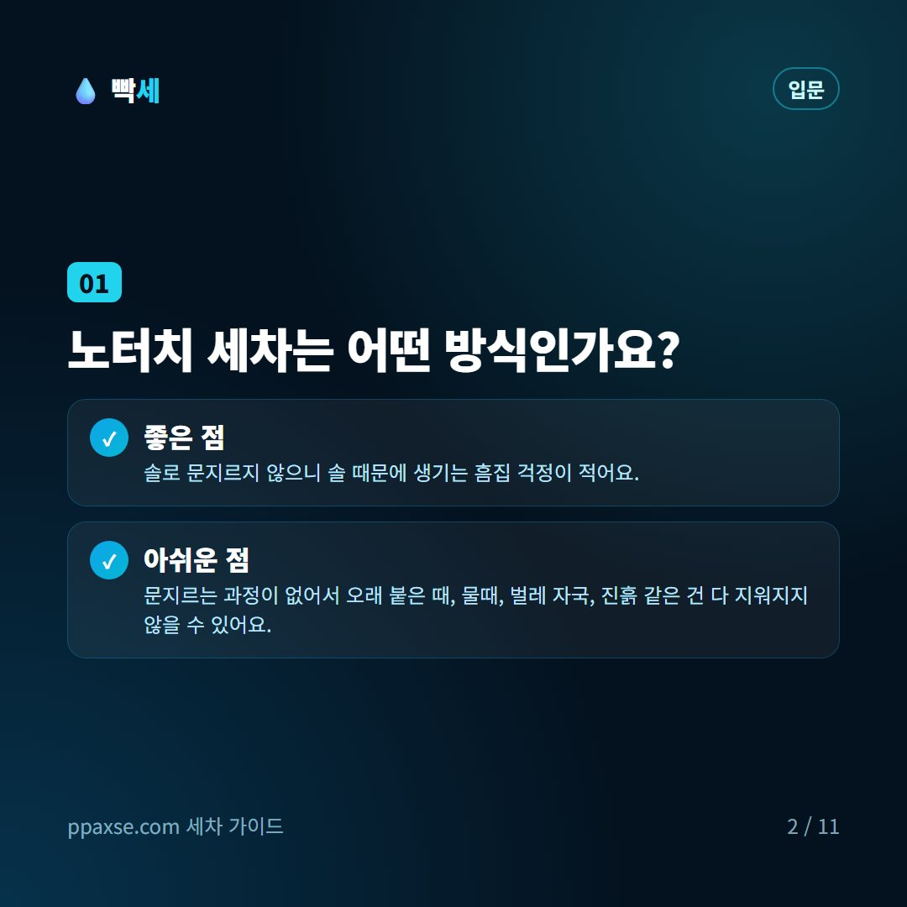
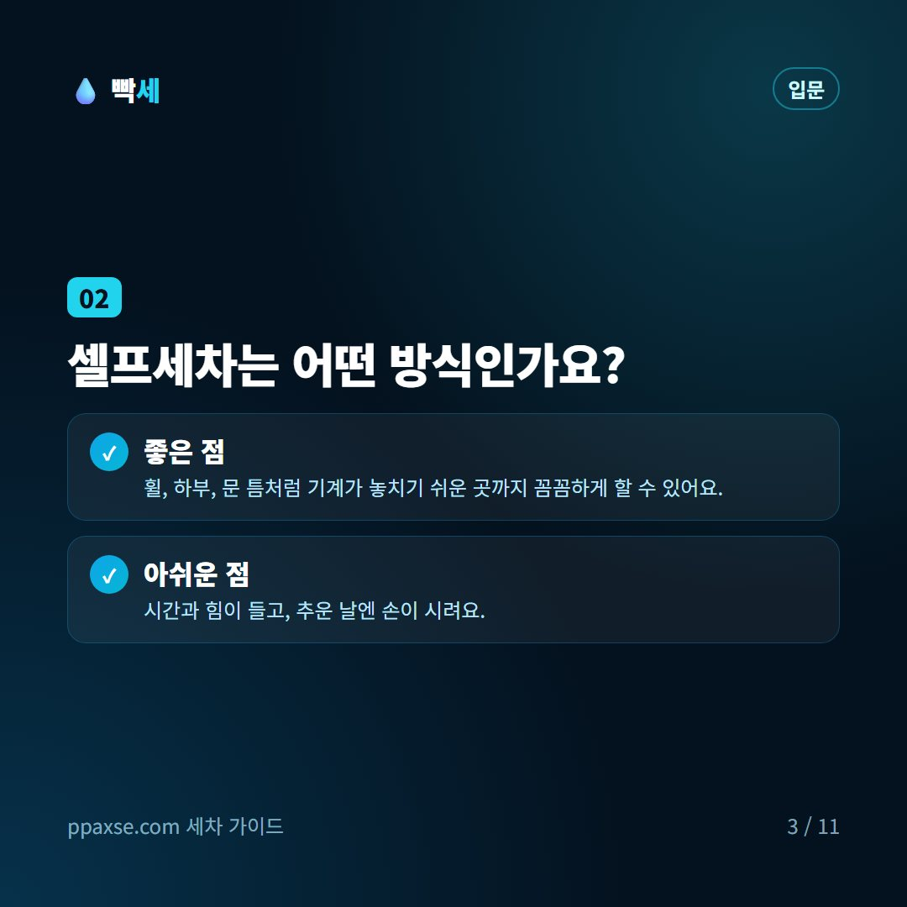
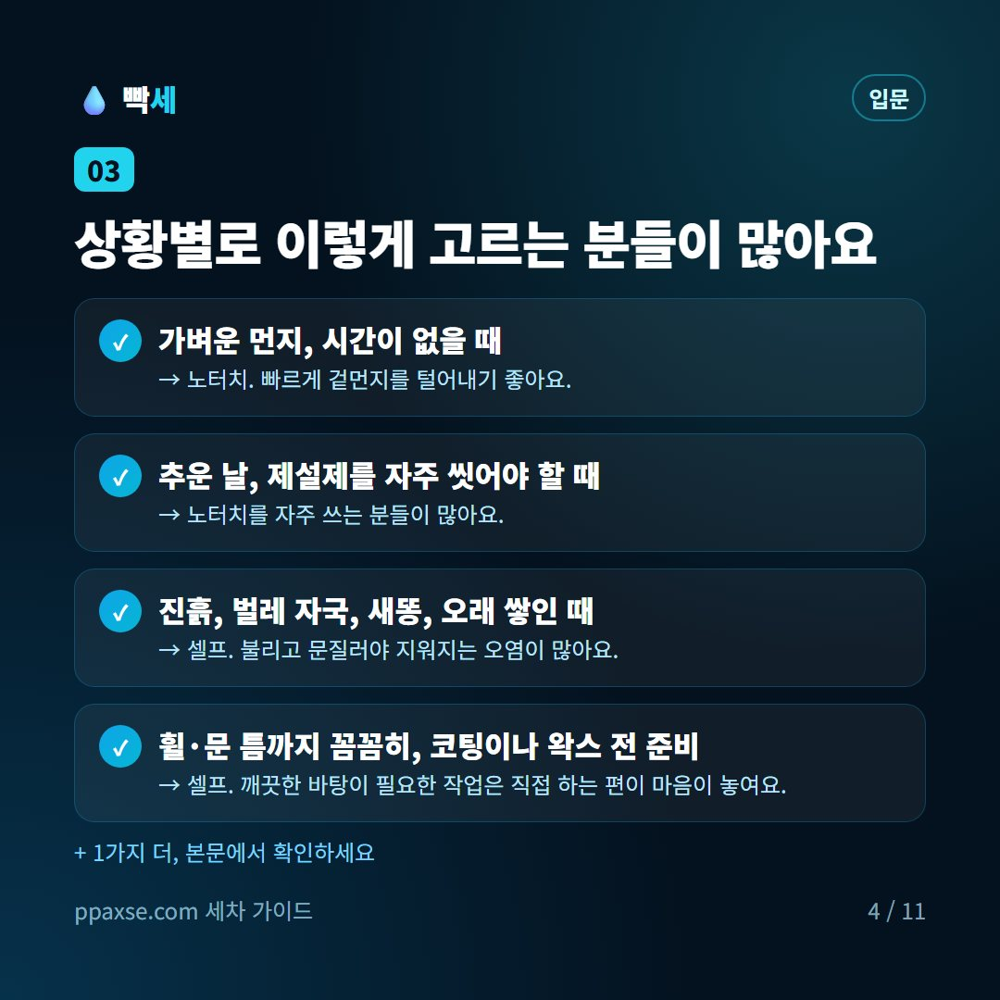
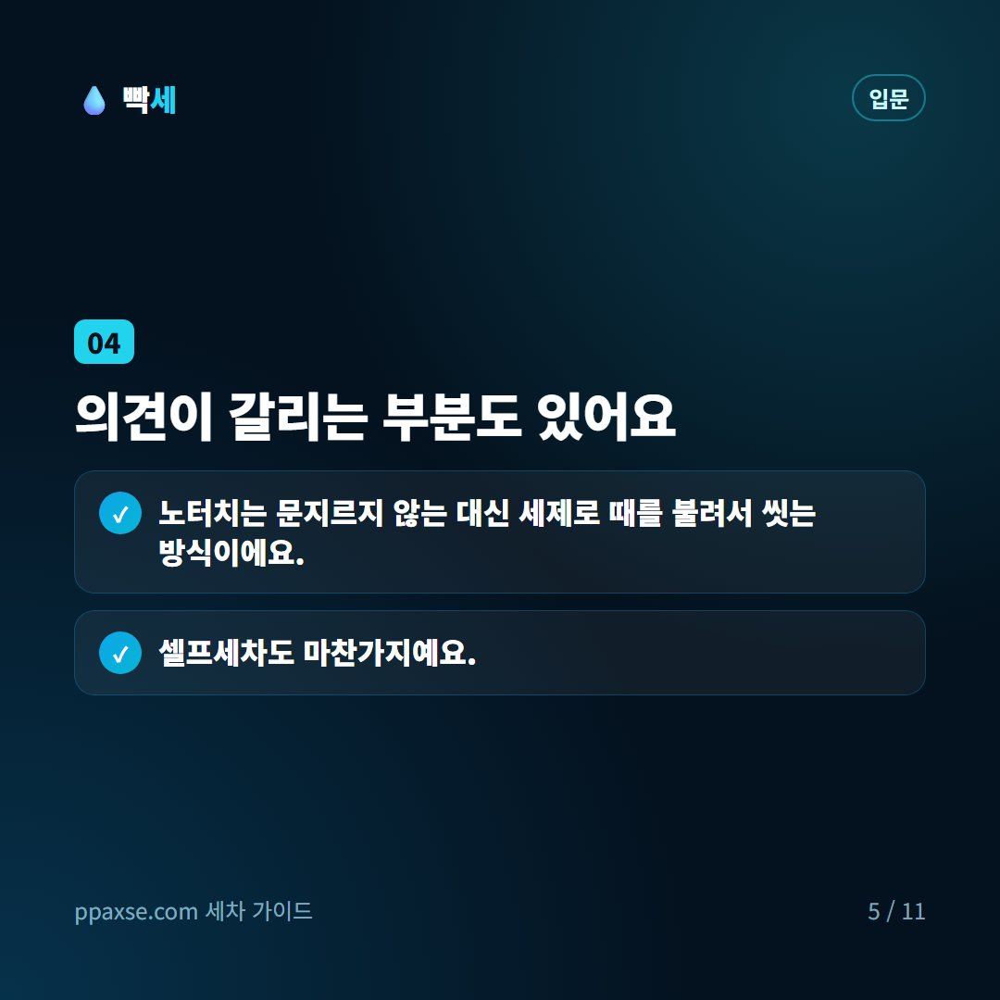
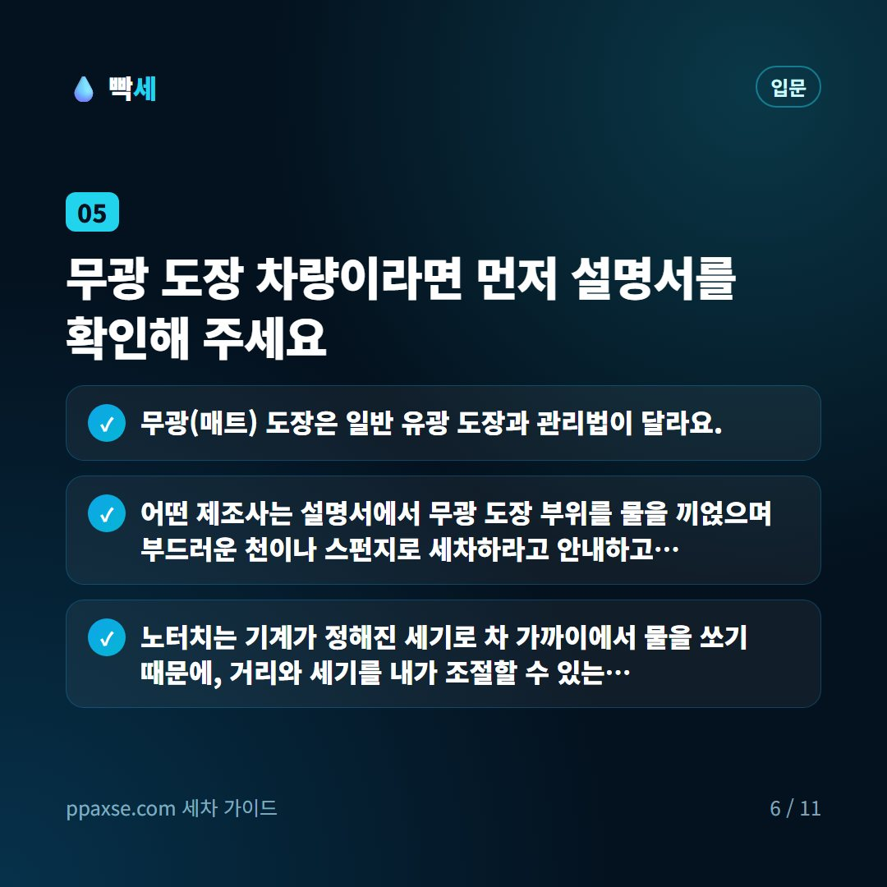
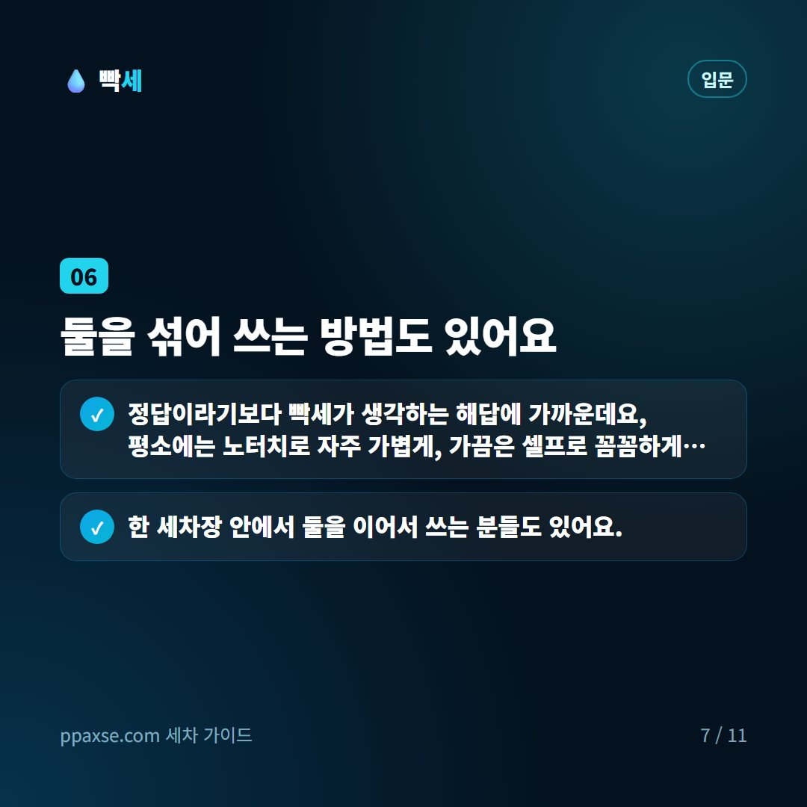
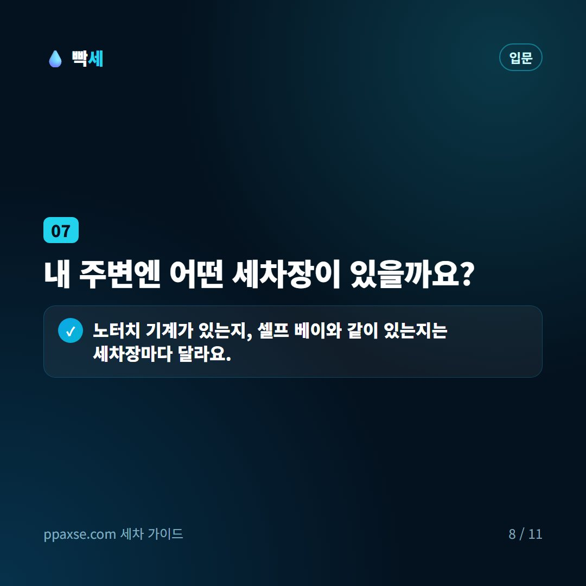

노터치 세차와 셀프세차 차이 — 상황별로 고르는 법
세차장에 가면 "노터치"라고 적힌 기계 세차와, 직접 고압수를 쏘는 셀프세차 베이가 나란히 있는 곳이 많아요. 둘 중 뭘 해야 할지 고민될 때가 있죠. 결론부터 말하면 어느 한쪽이 무조건 낫다기보다, 그날 차 상태와 시간에 따라 고르는 것이 좋아요. 이 글에서는 두 방식의 차이와 상황별로 고르는 기준을 정리했어요.
노터치 세차는 어떤 방식인가요?

노터치 세차는 솔(브러시)이 차에 닿지 않고, 기계가 고압수와 세제만으로 씻어 주는 자동 세차예요. 차를 정해진 자리에 세워 두면 기계가 차 주위를 돌며 세제를 뿌리고 헹궈요. 세차장에 따라 마지막에 바람으로 물기를 날려 주는 곳도 있어요.
- 좋은 점 — 솔로 문지르지 않으니 솔 때문에 생기는 흠집 걱정이 적어요. 짧은 시간에 끝나고, 차에 탄 채로 기다리는 곳도 있어서 추운 날이나 바쁠 때 편해요.
- 아쉬운 점 — 문지르는 과정이 없어서 오래 붙은 때, 물때, 벌레 자국, 진흙 같은 건 다 지워지지 않을 수 있어요. 바람 건조 뒤에도 물기가 남아 그대로 마르면 물자국이 생기기도 해요.
셀프세차는 어떤 방식인가요?

셀프세차는 세차 베이에서 고압수, 폼건, 미트(세차 장갑) 등을 직접 써서 씻는 방식이에요. 내가 원하는 부위를 원하는 만큼 씻을 수 있다는 게 가장 큰 차이예요.
- 좋은 점 — 휠, 하부, 문 틈처럼 기계가 놓치기 쉬운 곳까지 꼼꼼하게 할 수 있어요. 미트로 부드럽게 문지르면 노터치로 안 빠지는 때도 잘 지워져요. 물기 제거까지 직접 하니 마무리 상태를 내가 정할 수 있어요.
- 아쉬운 점 — 시간과 힘이 들고, 추운 날엔 손이 시려요. 또 문지르는 과정에서 흠집이 생기지 않으려면 약간의 요령이 필요해요. 예를 들어 모래·흙을 고압수로 먼저 충분히 떨어낸 뒤 문지르는 게 기본이에요.
세차장에 걸려 있는 공용 솔은 앞사람이 쓰면서 모래가 남아 있을 수 있어서, 도장면에는 개인 미트를 챙겨 가는 분들이 많아요. 공용 솔을 휠·타이어 같은 곳에만 쓰는 분들도 있어요.
상황별로 이렇게 고르는 분들이 많아요

- 가벼운 먼지, 시간이 없을 때 → 노터치. 빠르게 겉먼지를 털어내기 좋아요.
- 추운 날, 제설제를 자주 씻어야 할 때 → 노터치를 자주 쓰는 분들이 많아요. 다만 하부까지 확실히 씻고 싶다면 하부세차 기능이 있는지 확인하거나 셀프로 하부를 따로 씻는 분들도 있어요.
- 진흙, 벌레 자국, 새똥, 오래 쌓인 때 → 셀프. 불리고 문질러야 지워지는 오염이 많아요.
- 휠·문 틈까지 꼼꼼히, 코팅이나 왁스 전 준비 → 셀프. 깨끗한 바탕이 필요한 작업은 직접 하는 편이 마음이 놓여요.
- 솔 자국 걱정은 줄이고 싶지만 손세차는 부담될 때 → 노터치를 고르는 분들이 많아요. 다만 무광 도장 차량은 아래 내용을 먼저 확인해 주세요.
의견이 갈리는 부분도 있어요

노터치는 문지르지 않는 대신 세제로 때를 불려서 씻는 방식이에요. 그래서 "세제가 왁스나 코팅을 빨리 약하게 하지 않을까" 걱정하는 분들도 있고, "솔 자국보다는 낫다"고 보는 분들도 있어요. 쓰는 세제는 세차장마다 달라서 한마디로 말하기는 어려워요.
셀프세차도 마찬가지예요. "기계보다 내 손이 제일 안전하다"는 분들이 있는 반면, 요령 없이 문지르면 오히려 흠집이 더 날 수 있다는 의견도 있어요. 결국 어떤 방식이냐보다 어떻게 하느냐가 차 상태에 더 큰 영향을 준다고 볼 수 있어요.
무광 도장 차량이라면 먼저 설명서를 확인해 주세요

무광(매트) 도장은 일반 유광 도장과 관리법이 달라요. 제조사마다 권장하는 세차 방법이 다르기 때문에, 무광 차량이라면 노터치냐 셀프냐를 고르기 전에 차량 설명서의 세차 안내를 먼저 보는 게 좋아요.
어떤 제조사는 설명서에서 무광 도장 부위를 물을 끼얹으며 부드러운 천이나 스펀지로 세차하라고 안내하고, 롤러식 자동세차, 스팀 세차, 고압 세척 장비는 쓰지 말라고 적어 두기도 해요. 광택제나 연마제처럼 유광 도장용 제품도 무광 도장의 질감을 바꿀 수 있어 피하라고 안내하기도 해요.
노터치는 기계가 정해진 세기로 차 가까이에서 물을 쏘기 때문에, 거리와 세기를 내가 조절할 수 있는 셀프세차보다 무광 도장에는 부담이 더 클 수 있다는 이야기도 있어요. 반대로 셀프세차의 고압수도 고압 세척 장비이니 조심해야 한다는 의견도 있고요. 정해진 답이 없는 부분이라, 내 차 설명서의 안내를 따르는 게 가장 확실해요.
둘을 섞어 쓰는 방법도 있어요

정답이라기보다 빡세가 생각하는 해답에 가까운데요, 평소에는 노터치로 자주 가볍게, 가끔은 셀프로 꼼꼼하게 하는 방법을 권해요. 오염이 오래 붙어 있지 않게 자주 씻어 주고, 노터치로 안 빠지는 때는 셀프세차 때 한 번에 정리하는 거예요.
한 세차장 안에서 둘을 이어서 쓰는 분들도 있어요. 노터치로 큰 오염을 먼저 씻어낸 뒤 셀프 베이에서 휠이나 남은 때만 손보는 식이에요. 노터치를 하고 나서 드라잉 타월로 남은 물기만 닦아 줘도 물자국이 훨씬 줄어요. 겨울이라면 물기 제거가 더 중요한데, 자세한 요령은 겨울철 셀프세차 방법과 주의점에 정리해 두었어요.
내 주변엔 어떤 세차장이 있을까요?

노터치 기계가 있는지, 셀프 베이와 같이 있는지는 세차장마다 달라요. 빡세 지도에서는 세차장 종류(셀프·노터치·자동세차 등)와 하부세차·폼건·실내 같은 시설 정보를 이용자들이 함께 채워가고 있어요. 지역별 목록은 지역별 세차장 모음에서 볼 수 있어요.
셀프세차·노터치·손세차를 종류별로 골라 보고, 폼건·온수·하부세차 같은 시설 정보도 확인할 수 있어요.
🗺️ 세차장 지도 열기✏️ 자주 가는 세차장에 한마디 남기기🎁 한마디를 남기면 가입 없이도 매주 기프티콘 추첨에 응모돼요.